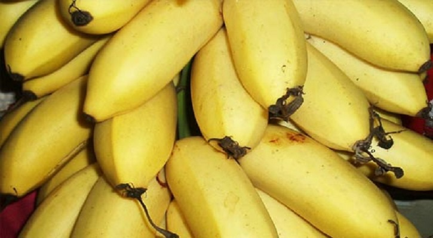
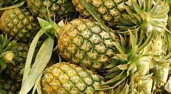
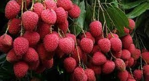

The Fruit Nation
The Fruit Nation
| Home | | | About Us |
|  |  |  |
|
Nanjanagud Banana – Karnataka
Nanjanagud Banana grown in Mysore and Chamarajanagar district of Karnataka and famous for its unique taste and aroma, registered under geographical indicators |
Vazhakulam Pineapple – Kerala
Vazhakulam Pineapple has been registered as Geographical Indication under Agricultural-Horticultural Product category. The Vazhakulam Pineapple fruit has a pleasant aroma and good source of carotene and vitamins. |
Tezpur Litchi – Assam
Tezpur Litchi produced at Lichu Pukhuri in Tezpur town and at Porowa, accorded Geographical Indication along with ginger produced in the Singhasan Hill of Karbi. |
| Previous | Next |